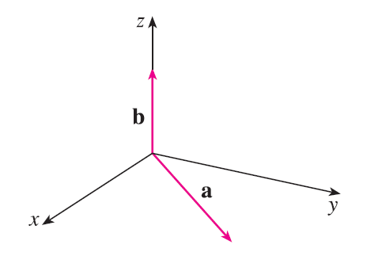

The figure shows a vector a in the xy-plane and a vector b in the direction of k. Their lengths are \(|\mathbf{a}| = 3\) and \(|\mathbf{b}| = 2\). (a) Find \(|\mathbf{a} \times \mathbf{b}|\). (b) Use the right-hand rule to decide whether the components of \(\mathbf{a} \times \mathbf{b}\) are positive, negative, or 0.